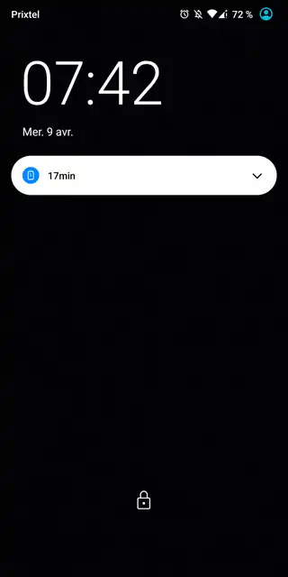
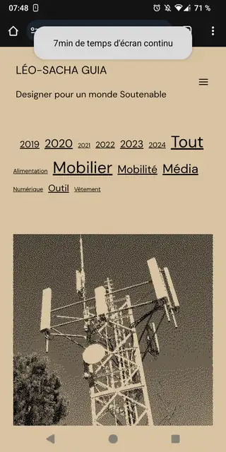

Daily Screen Time
إنتاجية ومهام
A minimalist Android application to track your daily screen time and regain control over your attention. Features: * Track daily screen time through a permanent notification * Continuous screen time alerts every 5 minutes * No personal data collection * No internet connection required * Open source
✓ ترخيص مفتوح (GPL-3.0-or-later) · آخر تحديث: 2025-05-02
1.0الإصدار
2.4 MBالحجم
GPL-3.0-or-laterالرخصة
Open in Kanzتحميل APK (2.4 MB)
Download APK
SHA-256: 0567465c64866ee81205cf4f992cc4f0601296100cd47b5b5adff28aa09e362e


امسح الكود لفتح صفحة التطبيق
Scan to open this app page
لو كنز مش متثبت عندك: نزّل متجر كنز.
Not installed? Get the Kanz store.